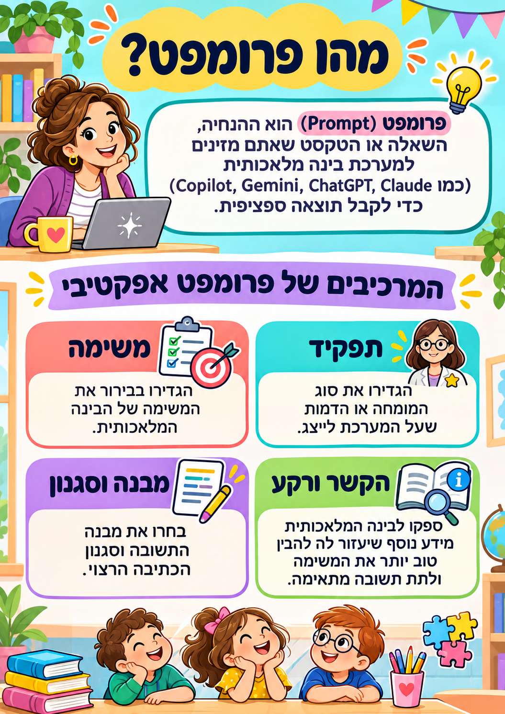

תפקיד
הגדירו את סוג המומחה או הדמות שעל המערכת לייצג.
פרומפט הוא ההנחיה שאנחנו נותנים לבינה המלאכותית. האינפוגרפיקה מסבירה ממה בנוי פרומפט טוב.

כך אפשר לזכור אותם כשכותבים בקשה לבינה מלאכותית.
הגדירו את סוג המומחה או הדמות שעל המערכת לייצג.
הגדירו בבירור את המשימה של הבינה המלאכותית.
ספקו מידע נוסף שיעזור להבין טוב יותר את המשימה ולתת תשובה מתאימה.
בחרו את מבנה התשובה וסגנון הכתיבה הרצוי.
אותה בקשה, פעם אחת כללית ופעם אחת עם ארבעת המרכיבים.
כתוב לי דף עבודה על שברים.
תפקיד: את מורה מנוסה למתמטיקה בבית ספר יסודי.
משימה: כתבי דף עבודה על חיבור שברים.
הקשר: כיתה ה', רמה מעורבת, 20 דקות עבודה.
מבנה וסגנון: שמונה תרגילים מהקל אל הקשה, בשפה פשוטה וידידותית.
שאלות לשיחה בזוגות.
איזה מרכיב הכי קל לי לנסח, ואיזה הכי מאתגר?
איזה תפקיד הייתי נותן לבינה המלאכותית בשיעור הבא שלי?
נכתוב פרומפט ונקבל מהבינה המלאכותית מערך שיעור מוכן.